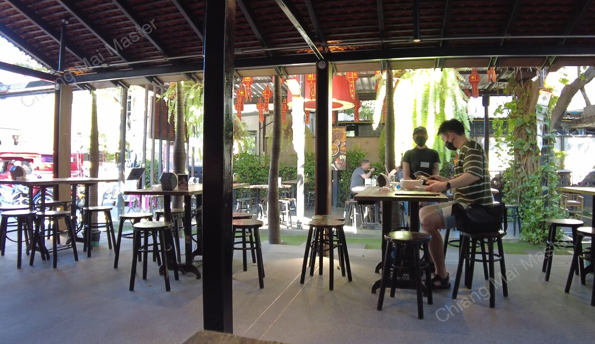
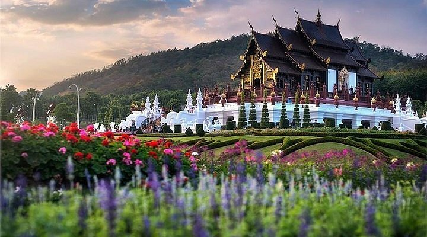
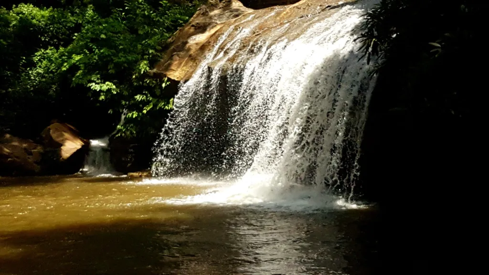

Day 1: Temples & Old City
- Morning: Wat Phra Singh, Wat Chedi Luang
- Lunch: Khao Soi Nimman or a local cafe in the Old City
- Afternoon: Explore Old City walls & moat, Lanna Folklife Museum
- Evening: Dinner at a riverside restaurant, Night Bazaar

Day 2: Nature and Adventure
- Morning: Doi Suthep Temple & Bhubing Palace
- Lunch: Local street food near Doi Suthep or Nimmanhaemin area
- Afternoon: Elephant Nature Park (ethical sanctuary)
- Evening: Explore Sunday Walking Street Market (if Sunday), or relax at a local spa

Day 3: Local Culture & Countryside
- Morning: Cooking class or handicraft village (Bo Sang Umbrella Village)
- Lunch: Sample northern Thai specialties
- Afternoon: Biking tour around rice paddies or visit Mae Sa Waterfall
- Evening: Dinner at a rooftop bar or riverside café, explore Nimman nightlife
